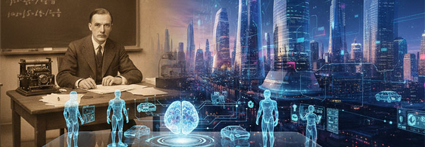

Índice
1. Los orígenes filosóficos de la Inteligencia Artificial2. El nacimiento de la computación moderna
3. El nacimiento oficial de la Inteligencia Artificial
4. Los primeros programas inteligentes
5. Los inviernos de la IA y los sistemas expertos
6. El Machine Learning y las redes neuronales
7. El Deep Learning y la revolución moderna
8. Grandes hitos históricos de la IA
9. La IA actual y el futuro
1. Los orígenes filosóficos de la Inteligencia Artificial
La historia de la Inteligencia Artificial comenzó mucho antes de que existieran los ordenadores. Desde la antigüedad, los seres humanos intentaban comprender cómo funciona el pensamiento y si la inteligencia podía explicarse mediante reglas racionales. Los filósofos griegos fueron algunos de los primeros en plantear estas cuestiones. Entre ellos destacó Aristóteles, quien desarrolló sistemas de lógica formal que permitían llegar a conclusiones a partir de determinadas premisas. Su trabajo fue revolucionario porque introdujo la idea de que el razonamiento humano podía organizarse de manera estructurada y lógica. Aunque en aquella época nadie imaginaba los ordenadores modernos, estos principios terminarían siendo fundamentales para la creación de la Inteligencia Artificial.
Durante los siglos posteriores, matemáticos y filósofos siguieron reflexionando sobre la posibilidad de representar el pensamiento mediante símbolos y cálculos. Uno de los más importantes fue Gottfried Wilhelm Leibniz, quien soñaba con crear un lenguaje universal que permitiera resolver cualquier discusión lógica utilizando matemáticas. Leibniz imaginaba un futuro en el que las personas pudieran resolver problemas complejos simplemente calculando resultados, una idea extremadamente adelantada a su tiempo.
Al mismo tiempo, comenzaron a construirse autómatas mecánicos en diferentes partes de Europa. Estas máquinas utilizaban engranajes y mecanismos de relojería para imitar ciertos movimientos humanos o animales. Aunque no poseían inteligencia real, causaban fascinación porque parecían estar vivas. Algunas podían escribir palabras, tocar instrumentos o realizar movimientos automáticos. Todo esto alimentó la imaginación de científicos y filósofos, que empezaron a preguntarse si algún día sería posible crear una máquina capaz no solo de moverse, sino también de pensar.
2. El nacimiento de la computación moderna
La Inteligencia Artificial no habría sido posible sin el desarrollo previo de la computación moderna. Durante el siglo XIX aparecieron figuras fundamentales que sentaron las bases de los ordenadores actuales. Uno de los más importantes fue Charles Babbage, quien diseñó la Máquina Analítica, considerada el primer concepto de ordenador programable de la historia. Aunque nunca llegó a construirse completamente debido a las limitaciones tecnológicas de la época, su diseño incluía elementos muy similares a los de los ordenadores modernos, como memoria, procesamiento de datos y programas.
La colaboradora más importante de Babbage fue Ada Lovelace, considerada por muchos historiadores como la primera programadora de la historia. Ada comprendió algo extraordinario: las máquinas podían manipular símbolos y no solamente números. Incluso llegó a imaginar que algún día podrían crear música o arte, una idea increíblemente avanzada para el siglo XIX y muy relacionada con la IA generativa actual.
El gran salto llegó en el siglo XX gracias a Alan Turing. Turing desarrolló la idea de una máquina teórica capaz de ejecutar cualquier cálculo matemático siguiendo instrucciones precisas. Este modelo, conocido como Máquina de Turing, se convirtió en la base conceptual de todos los ordenadores modernos. Durante la Segunda Guerra Mundial, Turing trabajó descifrando los mensajes secretos generados por la máquina Enigma utilizada por Alemania. Su trabajo ayudó enormemente a los Aliados y demostró el enorme potencial de las máquinas de cálculo.
Después de la guerra, Turing publicó una pregunta histórica: “¿Pueden pensar las máquinas?”. Para intentar responderla, creó el famoso Test de Turing, una prueba que consistía en comprobar si una persona podía distinguir entre una conversación con un ser humano y una conversación con una máquina. Esta idea marcó profundamente toda la investigación posterior sobre Inteligencia Artificial.
3. El nacimiento oficial de la Inteligencia Artificial
La Inteligencia Artificial nació oficialmente como disciplina científica en 1956 durante la Conferencia de Dartmouth. En esta reunión participaron científicos y matemáticos que compartían la idea de que la inteligencia humana podía reproducirse mediante programas informáticos. Entre los investigadores más importantes se encontraban John McCarthy, Marvin Minsky, Claude Shannon y Herbert Simon.
Fue John McCarthy quien utilizó por primera vez el término “Artificial Intelligence”. Los investigadores eran extremadamente optimistas y pensaban que en pocas décadas sería posible crear máquinas tan inteligentes como los seres humanos. Creían que los ordenadores podrían traducir idiomas automáticamente, resolver problemas matemáticos complejos, jugar perfectamente al ajedrez y mantener conversaciones naturales.
Sin embargo, la realidad era mucho más complicada de lo que imaginaban. La inteligencia humana depende no solo de cálculos lógicos, sino también de experiencia, emociones, percepción del entorno y sentido común. A pesar de ello, la conferencia de Dartmouth marcó el comienzo oficial de la IA como campo científico y dio inicio a décadas de investigación.
| volver al indice
|
4. Los primeros programas inteligentes
Durante las décadas de 1950 y 1960 comenzaron a desarrollarse los primeros programas que parecían demostrar inteligencia. Uno de los más famosos fue Logic Theorist, creado por Allen Newell y Herbert Simon. Este programa era capaz de demostrar teoremas matemáticos utilizando lógica simbólica, algo sorprendente para la época.
Otro sistema muy importante fue ELIZA, desarrollado por Joseph Weizenbaum en los años sesenta. ELIZA simulaba conversaciones similares a las de un psicólogo. Cuando una persona escribía frases sobre sus emociones o problemas, el programa respondía reformulando preguntas o utilizando patrones simples de conversación. Aunque hoy puede parecer rudimentario, en aquel momento impresionó muchísimo a la sociedad porque muchas personas sentían que la máquina realmente las comprendía.
A pesar de estos avances, los primeros programas inteligentes tenían enormes limitaciones. Funcionaban únicamente en situaciones muy concretas y no entendían realmente el significado de las palabras o el contexto. No poseían sentido común ni capacidad de aprendizaje real. Simplemente seguían reglas previamente programadas por los investigadores. Sin embargo, estos sistemas demostraron que las máquinas podían realizar tareas que antes parecían exclusivamente humanas.
5. Los inviernos de la IA y los sistemas expertos
Durante los años setenta, la investigación en IA sufrió una fuerte crisis conocida como el primer invierno de la IA. Las expectativas iniciales habían sido demasiado optimistas y los resultados reales eran limitados. Los ordenadores de la época eran lentos, caros y tenían muy poca memoria. Además, muchos problemas relacionados con el lenguaje y la percepción resultaron muchísimo más complejos de lo esperado.
Debido a la falta de avances importantes, gobiernos y empresas comenzaron a reducir la financiación destinada a proyectos de IA. Muchos laboratorios cerraron y el entusiasmo disminuyó considerablemente. Sin embargo, en los años ochenta apareció un nuevo enfoque que devolvió temporalmente el interés por la Inteligencia Artificial: los sistemas expertos.
Los sistemas expertos eran programas diseñados para imitar el conocimiento de especialistas humanos en áreas concretas, como medicina, ingeniería o finanzas. Funcionaban mediante miles de reglas lógicas creadas manualmente por expertos. Uno de los más famosos fue MYCIN, capaz de diagnosticar infecciones bacterianas y recomendar tratamientos médicos. En algunas tareas específicas, MYCIN obtenía resultados comparables a los de médicos humanos.
Aun así, los sistemas expertos también tenían grandes limitaciones. Eran difíciles de actualizar, no podían aprender por sí solos y fallaban fácilmente cuando aparecían situaciones nuevas. Esto provocó una nueva etapa de decepción conocida como el segundo invierno de la IA.
6. El Machine Learning y las redes neuronales
La gran transformación de la Inteligencia Artificial llegó cuando los investigadores cambiaron completamente su enfoque. En lugar de programar todas las reglas manualmente, comenzaron a desarrollar sistemas capaces de aprender automáticamente a partir de datos. Así nació el Machine Learning o aprendizaje automático.
El Machine Learning permitió que las máquinas detectaran patrones observando ejemplos. Por ejemplo, si una IA analizaba miles de fotografías de gatos, podía aprender por sí sola qué características tenían los gatos sin necesidad de que un programador escribiera reglas específicas. Este cambio fue revolucionario porque permitía a los sistemas adaptarse y mejorar con la experiencia.
Al mismo tiempo se desarrollaron las redes neuronales artificiales, inspiradas vagamente en el funcionamiento del cerebro humano. Estas redes están formadas por neuronas artificiales conectadas matemáticamente entre sí. Cada conexión tiene determinados valores que se ajustan durante el proceso de aprendizaje.
Aunque las redes neuronales existían desde hacía décadas, durante mucho tiempo no funcionaron demasiado bien porque faltaban datos, potencia computacional y algoritmos avanzados. Sin embargo, algunos investigadores siguieron trabajando en ellas convencidos de que tenían un enorme potencial.
7. El Deep Learning y la revolución moderna
A partir de 2010 comenzó una auténtica revolución tecnológica en el campo de la IA gracias al Deep Learning o aprendizaje profundo. Este avance fue posible por la combinación de tres factores fundamentales: la enorme cantidad de datos generados por Internet, el aumento de la potencia computacional y el desarrollo de nuevos algoritmos.
Internet proporcionó cantidades gigantescas de información en forma de textos, imágenes, vídeos y conversaciones. Al mismo tiempo, las tarjetas gráficas o GPUs permitieron entrenar redes neuronales muchísimo más grandes y complejas. Investigadores como Geoffrey Hinton, Yann LeCun y Yoshua Bengio fueron fundamentales en el desarrollo del Deep Learning moderno.
Gracias a estas técnicas, las máquinas comenzaron a reconocer imágenes, entender voz humana, traducir idiomas y detectar objetos con niveles de precisión impresionantes. La IA empezó a superar a los seres humanos en tareas específicas y se convirtió en una tecnología presente en la vida cotidiana.
8. Grandes hitos históricos de la IA
La historia moderna de la Inteligencia Artificial está marcada por varios acontecimientos históricos que demostraron el enorme avance de esta tecnología. Uno de los más famosos ocurrió en 1997, cuando Deep Blue derrotó al campeón mundial de ajedrez Garry Kasparov. Fue la primera vez que una máquina vencía a un campeón mundial en una partida oficial, lo que sorprendió al mundo entero.
Otro momento importante ocurrió en 2011, cuando IBM Watson ganó el concurso televisivo Jeopardy!, famoso por sus preguntas complejas y juegos de palabras. Watson demostró enormes avances en el procesamiento del lenguaje natural.
En 2016, AlphaGo derrotó al campeón surcoreano Lee Sedol en el juego de Go, considerado mucho más complejo que el ajedrez debido al gigantesco número de posibles movimientos. Esta victoria fue vista como uno de los mayores logros de la IA moderna.
Un año después, investigadores de Google publicaron el artículo “Attention Is All You Need”, que introdujo la arquitectura Transformer. Esta tecnología se convirtió en la base de los modelos modernos de IA generativa capaces de producir textos, imágenes y conversaciones avanzadas.
9. La IA actual y el futuro
Desde 2020 la Inteligencia Artificial ha avanzado a una velocidad extraordinaria. Empresas como OpenAI, Anthropic, Google DeepMind y Meta AI han desarrollado modelos capaces de generar textos, imágenes, vídeos, música y programas informáticos.
Actualmente la IA está presente en numerosos aspectos de la vida cotidiana. Se utiliza en teléfonos móviles, asistentes virtuales, medicina, automóviles, redes sociales, sistemas financieros y plataformas de entretenimiento. Los algoritmos pueden analizar enormes cantidades de datos en pocos segundos y realizar tareas que hace solo unas décadas parecían imposibles.
Sin embargo, el avance de la IA también ha generado preocupaciones importantes. Existen debates sobre la pérdida de empleos debido a la automatización, la creación de deepfakes y noticias falsas, los problemas de privacidad y los sesgos presentes en los algoritmos. Muchos expertos también discuten sobre la posibilidad futura de crear una Inteligencia Artificial General o AGI, es decir, una máquina capaz de aprender y razonar como un ser humano en cualquier ámbito.
La IA probablemente será una de las tecnologías más transformadoras de toda la historia humana. Su impacto podría compararse con el de la electricidad, Internet o la revolución industrial. La gran pregunta del futuro no es solamente si las máquinas llegarán a ser más inteligentes, sino cómo cambiará la sociedad cuando conviva diariamente con inteligencias artificiales cada vez más avanzadas.

